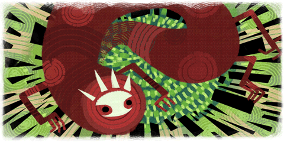

16 |
La fuite de Balasar |
 |
Balasar passa de nombreux siècles à s'acharner, espérant trouver une faiblesse dans la Pierre spirituelle.
Finalement, sa rage finit par faire éclater la pierre, l'éparpillant avec lui dans toutes les terres.

Enril resta enfermée dans un fragment de la Pierre spirituelle, en attendant d'être découverte par un éventuel héros.
Et ce fragment fut découvert par Toku, un jeune garçon bien curieux. |
 |
 |
 |